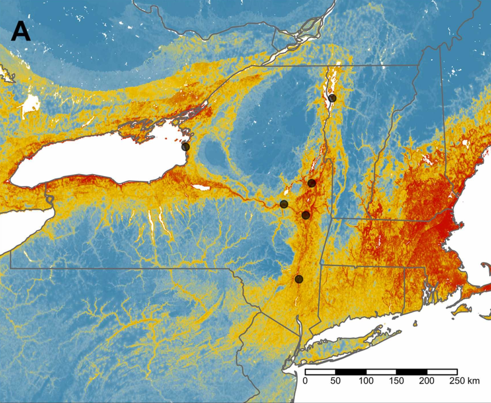
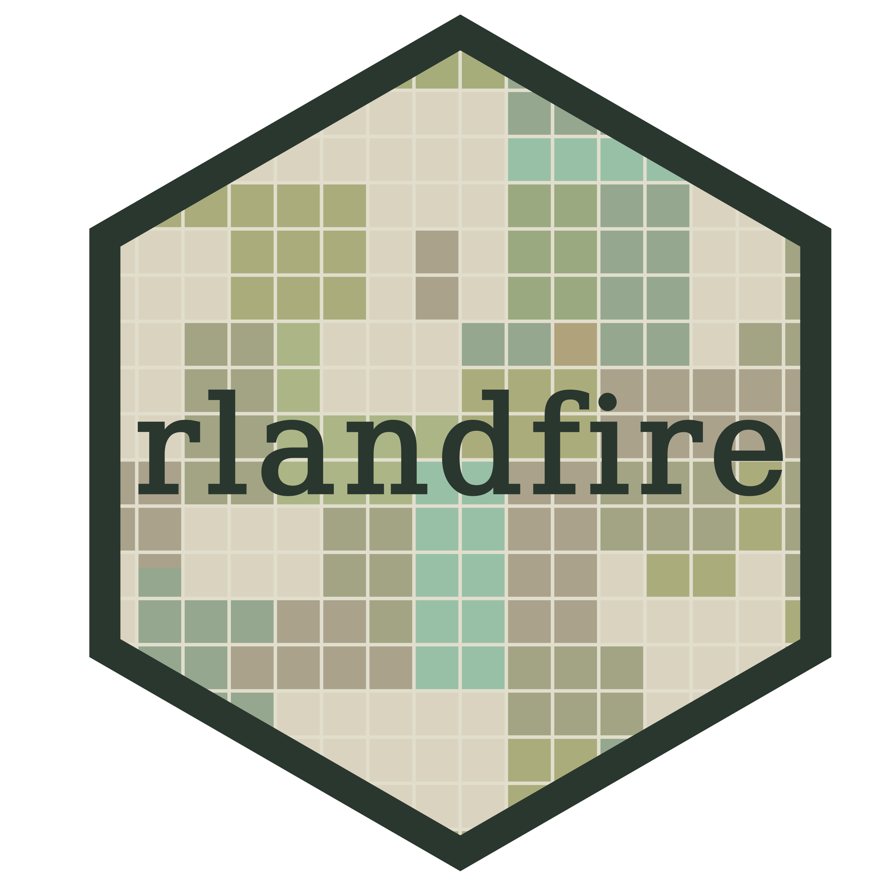

# CRAN:
install.packages("rlandfire")
# Development version:
# install.packages("devtools")
devtools::install_github("bcknr/rlandfire")Research and Current Projects
Explore some of my recent and ongoing projects.
Rapid, cost effective monitoring with UAVs and computer vision
Occupancy forecasting with deep learning models
rlandfire: Interface to ‘LANDFIRE Product Service’ APIModeling the diversity and distribution of NYS Bees
Ongoing Research
Decision support for a threatened fish supplementation program
Conservation of threatened and invasive species requires decision making under uncertainty. Working with researchers at the USGS and managers from USBR, USFWS and state agencies, I am developing a transparent value of information (VOI) analysis to identify priority research areas for the supplementation of a federal and state-listed threatened species in California's Sacramento Delta.Occupancy forecasting with deep learning models in agriculture
Early warning forecasts for migratory pest species benefit from rapid, computationally efficient models with clearly reported uncertainty. I am leading the development of a variation deep learning occupancy forecasting architecture which integrates presence-only records and monitoring network data to generate weekly forecasts of pest occupancy probabilities across the eastern United States.Previous Research
During my PhD, I used open data to model how the diversity and distributions of solitary bees may change under future climate conditions and in human-altered landscapes. By evaluating how species respond to the changing environment, I generated data products for land management decision-making and biodiversity conservation.
Historically, insect populations lacked detailed, structured, and long-term surveys. The need for more data presents a challenge in prioritizing conservation action. By leveraging community science data and collection records with Species Distribution Modeling (SDM), we can better evaluate how species may respond to a suite of interacting drivers of global change.
UAV‐based remote sensing of bee nesting aggregations with computer vision for object detection
Traditional methods for monitoring solitary ground nesting bee aggregations is labor-intensive and provides limited, often coarse, metrics. We introduced a novel high throughput method for rapid, cost-effective monitoring using UAV-based imagery and computer vision. Journal of Applied Ecology.Mapping bee diversity with landscape‐level models to inform conservation
The local context required for implementing effective conservation actions is often missing from global analyses of bee diversity. Using records from the Empire State Native Pollinator Survey and GBIF, we modeled how bee species are distributed across the state of New York and what habitats may be of high conservation value. Read the paper in Conservation Science and Practice.
Forecasting the Impacts of Global Change on a Bee Biodiversity Hotspot
The American Southwest is a hotspot for rapid climate change, land conversion, and bee biodiversity. Home to nearly 1/4 of US bee species, we are using Joint SDMs to evaluate how global change might impact species richness in the region and how to mitigate the threat. Read the paper in Ecology and Evolution.
Climate-driven range shifts in a rare specialist bee
Most specialists bees collect pollen from species within the same family of plants. Macropis nuda only collects pollens and oils from a couple of species. Our recent Global Ecology and Conservation publication explored how this species and its primary host plant might respond to the changing climate.Software

rlandfire
rlandfire is an R package for working with the 'Landscape Fire and Resource Management Planning Tools' (LANDFIRE) geospatial layers in R. The current version provides and interface to the 'LANDFIRE Product Service' API from within R.
rlandfire is now on CRAN! The package can be installed with:
Please submit all bug reports, feature requests, or questions on the GitHub repo.
I am open to contributors. If you are a LANDFIRE user and are interested in participating, please reach out!